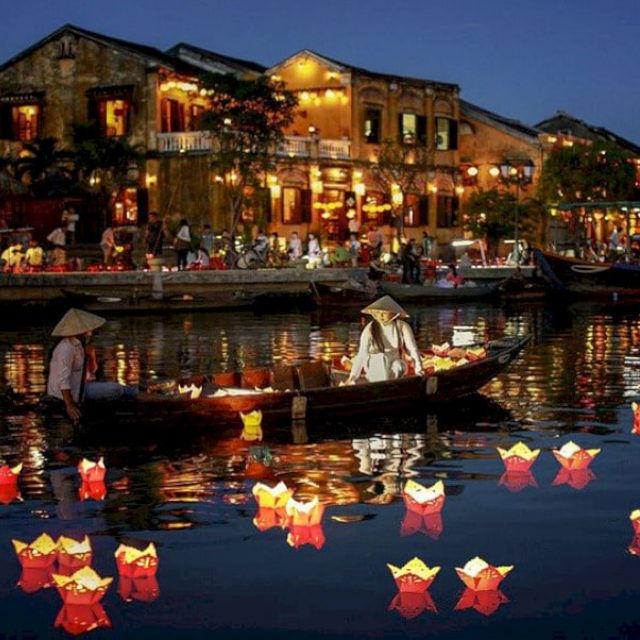
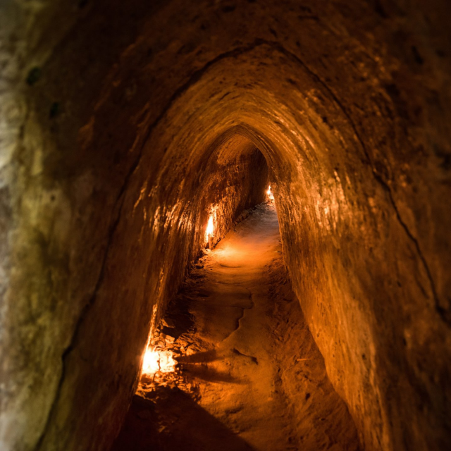

Ha Long Bay
A natural wonder featuring emerald waters and towering limestone islands, a UNESCO World Heritage site.
Nearby Hotels:
-
Vinpearl Resort & Spa Ha Long – 1.5 km
(4.4)
💲180 / night
-
Wyndham Legend Halong – 2.0 km
(4.3)
💲150 / night
-
Novotel Ha Long Bay – 3.0 km
(3.9)
💲120 / night

Hoi An Ancient Town
A charming historic town with lantern-lit streets, ancient houses, and a blend of cultures.
Nearby Hotels:
-
Anantara Hoi An Resort – 0.5 km
(4.8)
💲200 / night
-
La Siesta Hoi An Resort & Spa – 1.0 km
(4.9)
💲230 / night
-
Almanity Hoi An Wellness Resort – 1.2 km
(4.2)
💲160 / night

Cu Chi Tunnels (Ho Chi Minh)
An extensive network of underground tunnels used during the Vietnam War, now a historic attraction.
Nearby Hotels:
-
Hotel Des Arts Saigon – 30 km
(4.7)
💲250 / night
-
New World Saigon Hotel – 32 km
(4.4)
💲190 / night
-
Park Hyatt Saigon – 33 km
(4.9)
💲400 / night